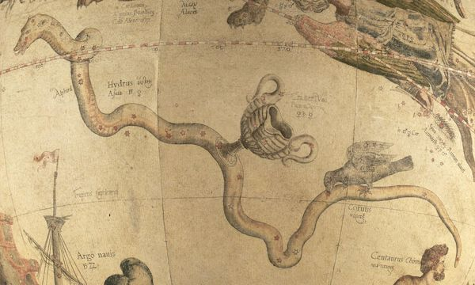

Medieval illustrators frequently combined the constellations Corvus (the Crow or Raven) and Hydra (the Water Snake) in a single image, with Corvus perched on Hydra’s back, and sometimes accompanied by Crater (the Cup). Corvus was often identified with the white crow that informed Apollo of his lover Coronis’s infidelity; in a fit of rage, Apollo turned the crow’s feathers black. This story was the basis for Geoffrey Chaucer’s Manciple’s Tale.
Here, an image of Corvus atop Hydra has been damaged by a reader seeking to extract a drawing of Canis Minor (the Small Dog) on the verso. Clearly, images of dogs were as prized in the fifteenth and sixteenth centuries as they are today.
Gerard Mercator, Celestial Globe with Hydra, Corvus, and Crater (Leuven: 1551). The Mercator Globes at Harvard Map Collection, http://hcl.harvard.edu/mercatorglobes.